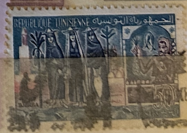
| SOURCE | TITLE| IMAGE MATCH | click to source page |
| Tunisia Stamps | Stamp N°690 | 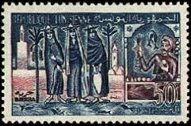 |
| eBay | Tunisia #356 1959 50Fr Three women of Djerba island imperf pair MNH | eBay | 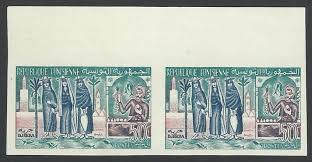 |
| Todocolección | tunisia & marcofilia, tunis, bab el khadhra, tu - Compra venta en todocoleccion | 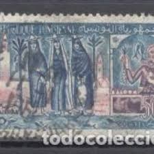 |
| eBay | Historical Figures Tunisian Stamps for sale | eBay | 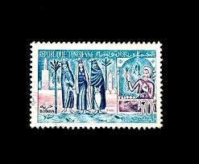 |
| Todocolección | sello de túnez, 40 m republique tunisienne, mez - Acheter Timbres d'autres pays africains sur todocoleccion | 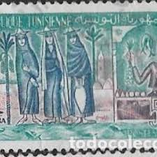 |
| 20 Tunisia ideas | tunisia, postage stamp art, postal stamps | 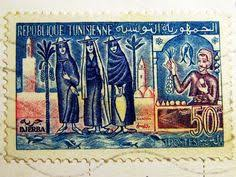 | |
| Dreamstime.com | 316 Stamp Tunisia Stock Photos - Free & Royalty-Free Stock Photos from Dreamstime | 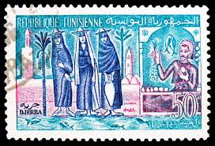 |
| eBay | Tunis Culture Ethnicities Djerba Island Women stamp 1953 A-24 | eBay | 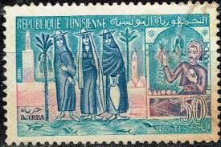 |
| iStock | Tunisian Women Shopping On An Old Postage Stamp Stock Photo - Download Image Now - Postage Stamp, Tunisia, Adult - iStock | 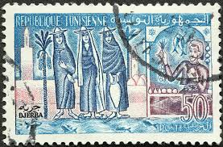 |
| Dreamstime.com | 255 Tunisia Postcard Stock Photos - Free & Royalty-Free Stock Photos from Dreamstime | 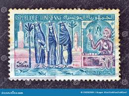 |
| Stamp Community Forum | Tunisia Stamp Engravers - Page 3 - Stamp Community Forum | 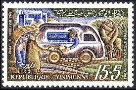 |
| Stamp Community Forum | Tunisia Stamp Engravers - Page 6 - Stamp Community Forum | 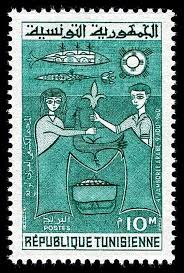 |
| | Katz Auction | Zambia 5 Pounds 1964 (ND) | Katz Auction | 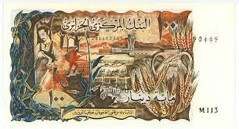 |
| imen elloumi (imeneaa) - Profile | Pinterest | 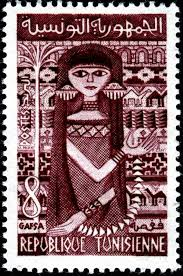 | |
| X | A collection of Tunisian stamps 🇹🇳 | 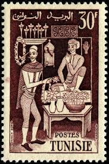 |
| eBay | Korbous Qurbus Mosque Tunisia Postcard Mailed from Tunis to Switzerland in 1971 | eBay | 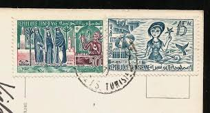 |
| vividagallery.com | Tunisia Sfax Agriculture Fishing Folk Art Urban Heritage Blue Shower Curtain by Vivida Gallery - Vivida Gallery | 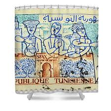 |
| | Katz Auction | Tunisia 5 Dinars 1965 | Katz Auction | 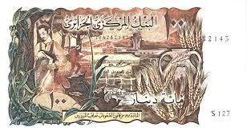 |
| Tunisia 1959 Living in Tunisia | 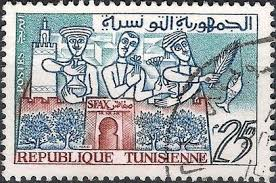 | |
| CollectorBazar | Tunisia 1959 Living in Tunisia mnh | 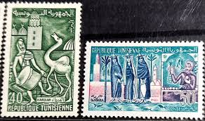 |
| Tunisia Stamps | Stamp N°617 | 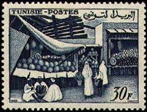 |
| Tunisia Stamps | Stamp N°897 | 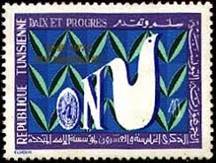 |
| Tunisia woman, Tunisia, shows Camel rider, circa 1960, Un fabuloso sello de Túnez, emitido en 1959, tan solo dos años después de que Túnez se convirtiera en una república independiente. | 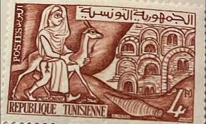 | |
| lastdodo.com | Hatem El Mekki [1918-2003] (elmekki) Stamp catalogue - LastDodo | 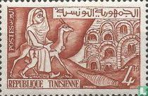 |
| 张楚雯(zhaaangserenaaa) - Profile | Pinterest | 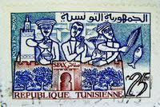 | |
| CafePress | Vintage Mermaid Red Umbrella Shower Curtain | CafePress | 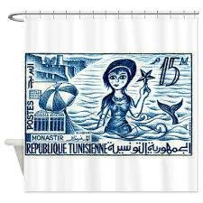 |
| Tunisia Stamps | Stamp N°1055 | 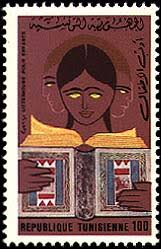 |
| eBay | Decimal Postage Morocco Stamps for sale | eBay | 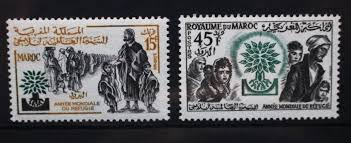 |
| EstateSales.org | Battle of Al Mansurah: Louis IX of France in Chains Egyptian Stamp | EstateSales.org | 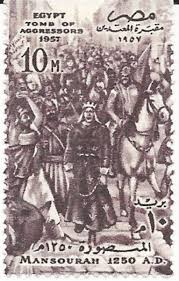 |
| Flickr | tunisielabelle | Flickr | 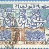 |
| eBay | Tunisia #B157 1984 Red Crescent Society photographic proof | eBay | 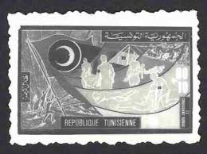 |
| Tunisia Stamps | Stamp N°1081 | 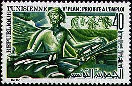 |
| Tunisia Stamps | Stamp N°687 | 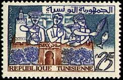 |
| eBay Australia | Tunisia Stamps for sale | Shop with Afterpay | eBay Australia | 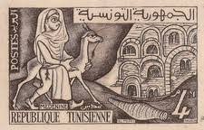 |
| eBay | 1959-63 Tunisia #363, 363A & 363B - OGNH - VF - CV$44.00 (ESP#0627) | eBay | 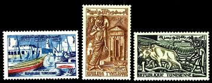 |
| Mystic Stamp | Worldwide - Africa - Tunisia - Page 1 - Mystic Stamp Company | 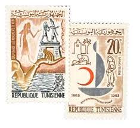 |
| Tunisia Stamps | Stamp N°644 | 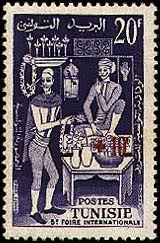 |
| Stamp Community Forum | French Morocco : On Steiner Pages. - Stamp Community Forum | 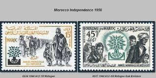 |
| eBay | 43 Postage Stamps, Africa Stamps, Used 1964-1983 | eBay | 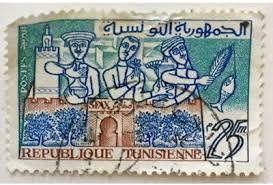 |
| Shutterstock | Tunisia Circa 1960 Stamp Printed By Stock Photo 89312278 | Shutterstock | 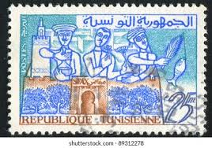 |
| Tunisia Stamps | Stamp N°746 | 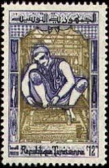 |
| Free stamp catalogue | Stamps with the theme Anti Racism - Freestampcatalogue.com - The free online stampcatalogue with over 500.000 stamps listed. | 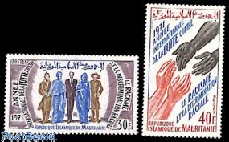 |
| Tunisia Stamps | Stamp N°739 | 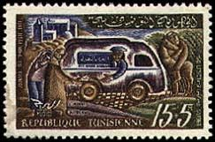 |
| Tunisia Stamps | Stamp N°787 | 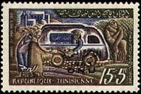 |
| Encyclopaedia Philatelica | postage stamp designer: Sfax - Encyclopaedia Philatelica | 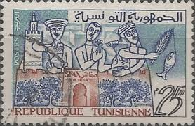 |
| Blogger.com | Stamp Art: Albert Decaris (2nd Part 1946/1950) | 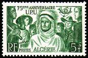 |
| Tunisia Stamps | Stamp N°1373 | 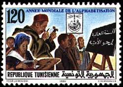 |
| Free stamp catalogue | Stamp 1960, Morocco International year of refugees 2v, 1960 - Collecting Stamps - Freestampcatalogue.com - The free online stampcatalogue with over 500.000 stamps listed. | 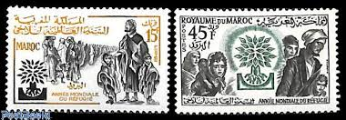 |
| Numista | 5 Dinars - Algeria – Numista | 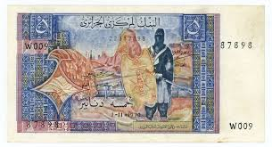 |
| brumstamp | Morocco 1960 WRY/ Refugees/ Tree/ Welfare/ People/ Children 2v set n29036 | |
| Stamp Community Forum | Tunisia Stamp Engravers - Page 4 - Stamp Community Forum | |
| The World In Stamps | Egypt the Cemetery Of the Aggressors: 1957 : The World In Stamps | |
| Gresham's Snowplowing Inc. | Canada Post Stamps FUJEIRA - CIRCA 1974: Stamp Printed By Fujeira, Shows Famous People Joan Of Arc Charles De Gaulle Napoleon Bonaparte Circa 1974 Image559835233 Fujeira 100 Different Stamps (stamps For Collectors Set | |
| postbeeld.com | Stamp 1959, Tunisia Central bank 1v, 1959 - Collecting Stamps - PostBeeld - Online Stamp Shop - Collecting | |
| | Katz Auction | Algeria 5000 Francs 1949 | Katz Auction | |
| Stamp Community Forum | How About Your Tractors? - Page 10 - Stamp Community Forum | |
| kbcoins.in | French Algeria - 100 francs 1970 aunc currency note w/ light stain - KB Coins & Currencies | |
| Shutterstock | Symbols Of Blacksmith: Over 2,703 Royalty-Free Licensable Stock Photos | Shutterstock | |
| eBay | MOROCCO # 36-7 MNH WORLD REFUGEE YEAR 1960 | eBay | |
| Dreamstime.com | Tunisia Postage Stamps Stock Photos - Free & Royalty-Free Stock Photos from Dreamstime |